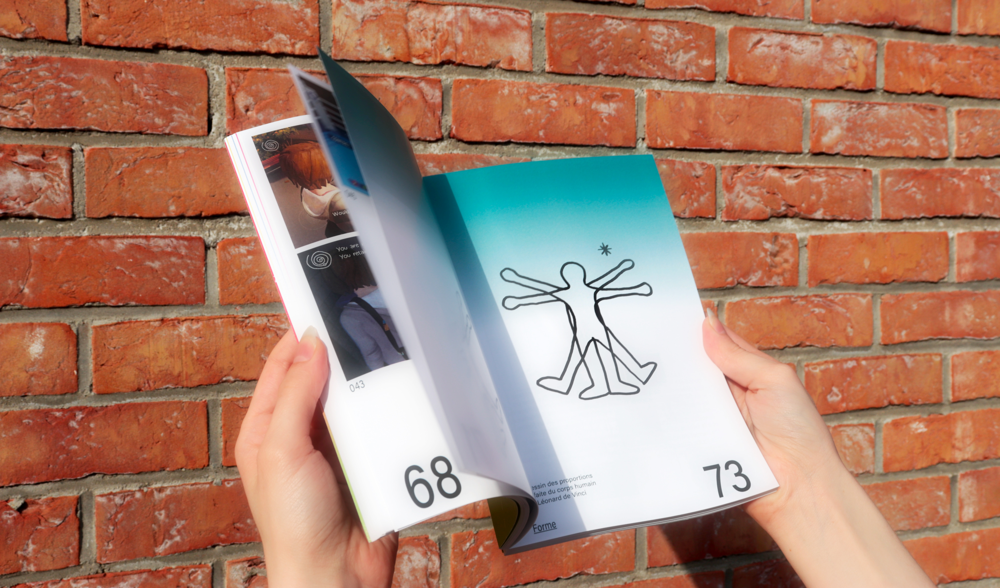
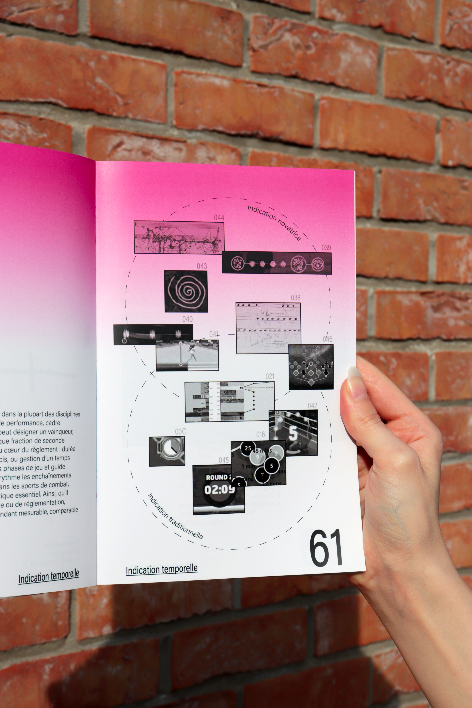
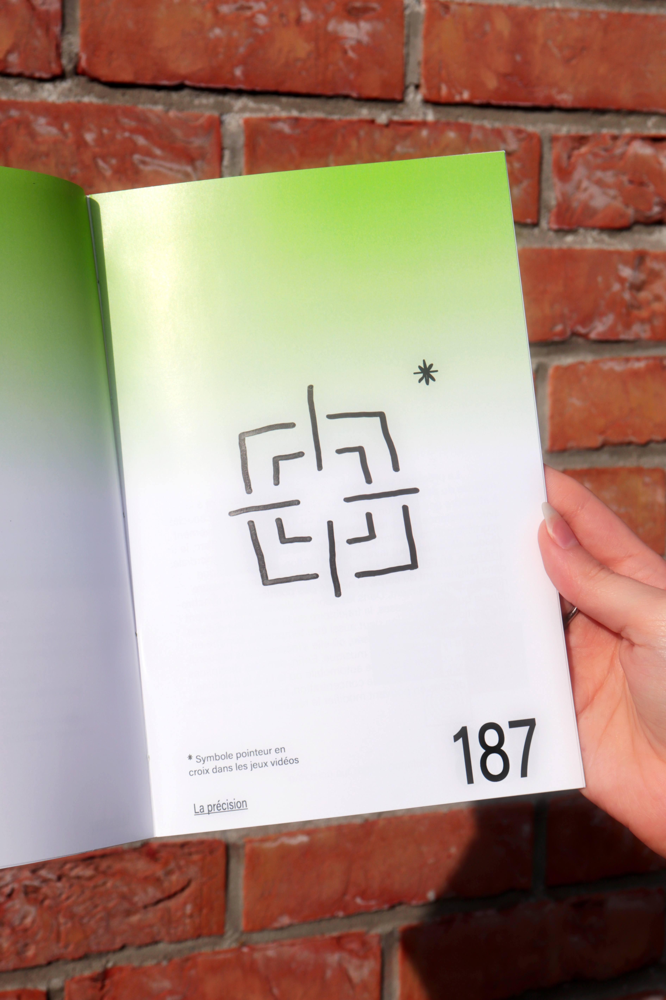
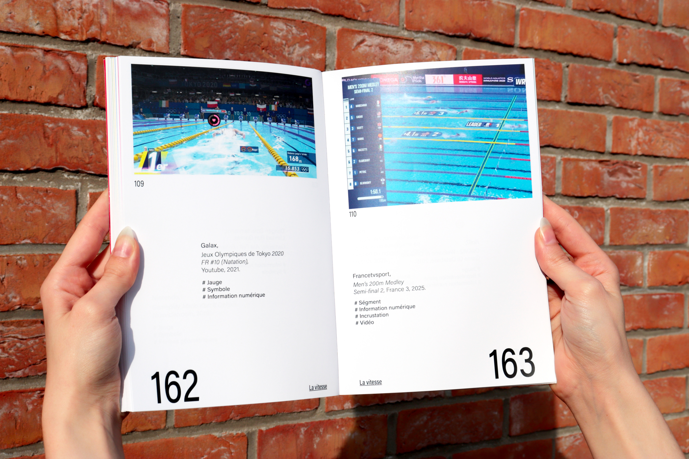

Ce manuel de représentations graphique est un répertoire de forme lié à la performance. J’expose au sein de cet édition, un large panel de représentation à travers dix gestes. J’y fait intervenir une centaines de sources différentes. L’iconographie est ainsi analysé, trié et cartographié au travers de près de 200 pages.
DESIGN ÉDITORIAL, CARTOGRAPHIE



